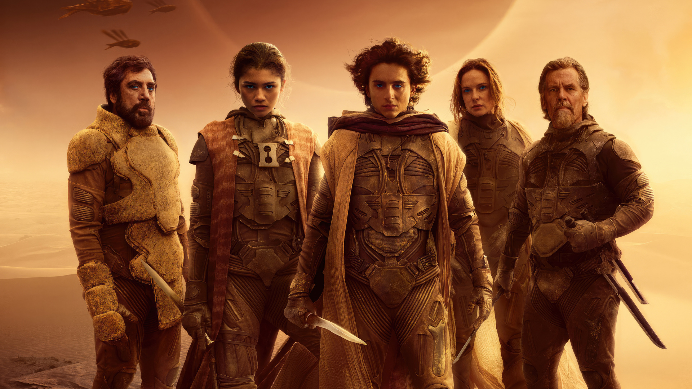

Dune: Parte Dos
Dune: Parte Dos sigue a Paul Atreides y Lady Jessica mientras intentan integrarse a los Fremen en el planeta Arrakis. Después de la devastación de la Casa Atreides, Paul se enfrenta a una elección entre el amor de su vida y el destino del universo, mientras busca venganza contra los conspiradores que destruyeron a su familia. La película explora temas de poder, religión y la profecía de Paul como el mesías, manteniendo la calidad técnica y narrativa de la primera parte.
